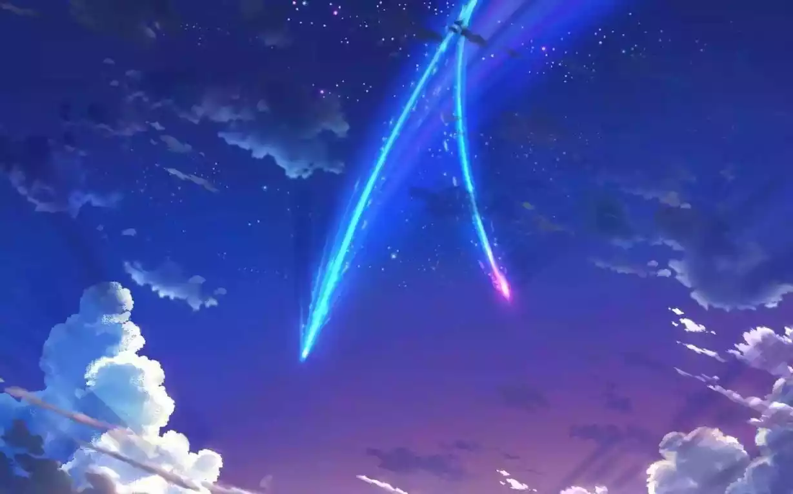

All my dreams seem to have a common theme of 'meteors' in the sky. we all went home and saw them, there was just random people in my home, then we all went to watch a movie, but instead it's a really long youtube video of someone ranting about the batman movie about comets…
